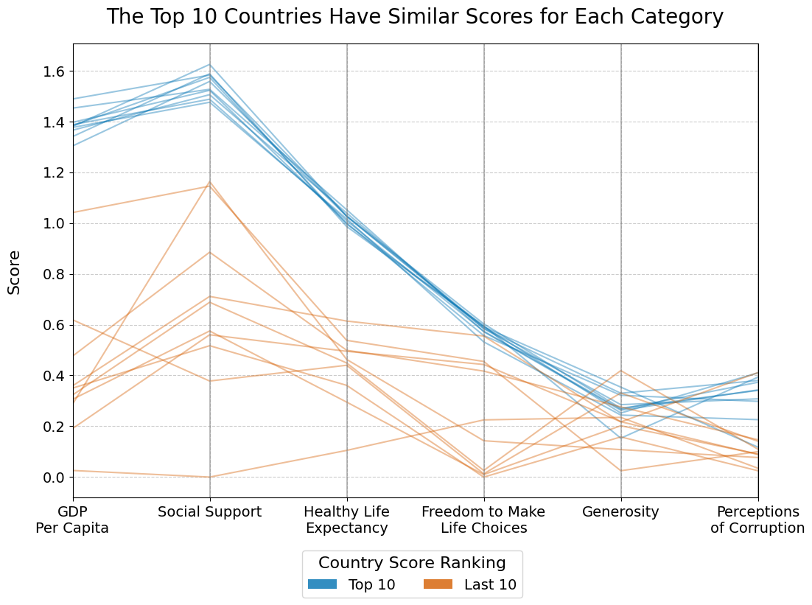

The aim of this project is to answer the question: What Factors are Associated with World Happiness? In order to take a deeper dive into this question, we have utilized the dataset “World Happiness Report” from the Kaggle database. This data was collected from the Gallup World Poll between the years of 2015-2019. For the purposes of individual visualizations, we are focusing on the year 2019, however there are occasional comparisons drawn between all years as well.
This dataset ranks countries based on “Happiness Score”, which is what we will be using as our metric for “World Happiness” to answer the research question. The “Happiness Score” in itself is the result of a Gallup Poll of a representative sample of the country’s population, where respondents were asked to rank their current lives from 0-10 with zero being the worst possible life, and 10 being the best possible life.
Additionally, the dataset provides six other columns that we will use: GDP per Capita, Social Support (Family), Healthy Life Expectancy, Freedom to Make Life Choices, Generosity, and Perceptions of Corruption. These columns are estimates as to how much each factor listed contributes to the results from the Happiness Score. It is worth noting that these columns are not raw components, but are scaled so that when summed, they result in the Happiness Score for each country.
Here is the created choropleth map showcasing the countries with their respective happiness score, as well as the breakdown of score shown in the tooltip. This map has shown us that in the year 2019 that Finland, Denmark, Canada, Norway, Sweden, and Australia have the highest happiness scores.
For this chart, we wanted to display comparisons in factors between the top 10 and last 10 countries. This PCP chart allows us to see some trends in the highest and lowest ranking scored countries that may not have been seen otherwise. For example, the top 10 countries all score similarly in terms of each factor, which is interesting compared to the lowest 10 countries which are far more varied. So, perhaps there are certain factors that are associated with higher scores, but specific factors may be less of a contributing input for lower scoring countries.

This set of charts displays the breakdown of happiness score factors for the top 6 and lowest 6 scoring counties. The set of donut charts helps to show us possible trends in the highest and lowest scoring countries in a more specific way, furthering on the PCP plot previous. For example, in the top scoring countries it appears that GDP per capita and Social Support are important factors, and for the lowest 6 countries, Social Support also appears to be influential for those scores based on the donut charts.
Since our focused Happiness report is for the year 2019, we chose to highlight the top 10 countries with the highest happiness scores in that year and look at how those countries may have changed over 2015 to 2019.
In looking at the overall shape of the plot, you can see how the happiness scores plateau at GDP per capita of around 43k. Despite Luxembourg having the highest GDP per capita for years 2015 to 2019 it is not in the top 10 happiest countries.
We found that Countries that were reported to have high happiness score indexes have had the high GDP per capita, strong social support and higher life expectancies, suggesting that these factors more strongly contribute to overall happiness.